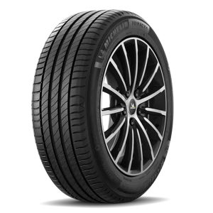
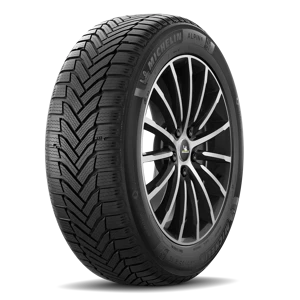
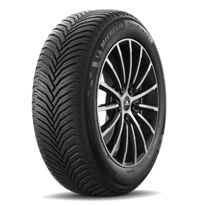
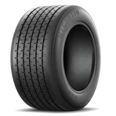
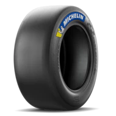

Neumático Verano
Neumático de verano con un diseño optimizado para temperaturas altas. Sus canales ayudan a evacuar el agua y mejorar la estabilidad en carreteras secas y mojadas.

Neumático Invierno
Neumático de invierno con un dibujo profundo y múltiples laminillas en la banda de rodadura. Proporciona mejor tracción en superficies frías, con nieve o hielo.

Neumático All-Season
Neumático para todas las estaciones con un diseño equilibrado. Tiene un patrón de banda de rodadura moderado para ofrecer un buen rendimiento en seco, mojado e incluso nieve ligera.

Neumático Competición
Neumático de competición con una banda de rodadura lisa o de bajo relieve. Está diseñado para proporcionar el máximo agarre en circuitos y carreteras secas, optimizando el contacto con el asfalto.

Competición Montaña
Neumático de competición para terrenos de montaña. Es completamente liso (tipo slick) y parece diseñado para rallyes o competiciones en carretera con máxima adherencia.